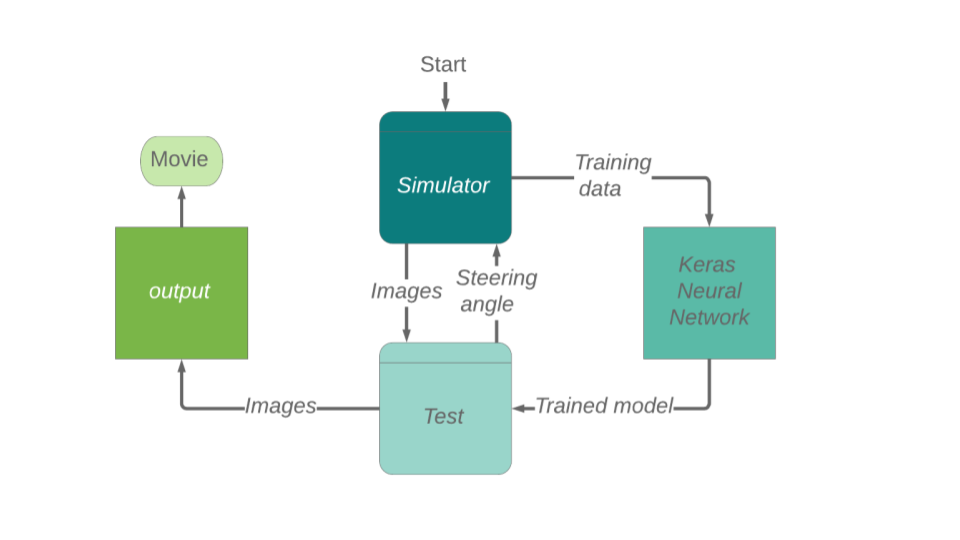

Behavioral Cloning for Self-Driving Cars

Behavioral Cloning using Convolutional Neural Network.
In this project a convolution neural network is built using Keras to predict steering angles from images.
The goals / steps of this project are the following:

The code is available on: Github